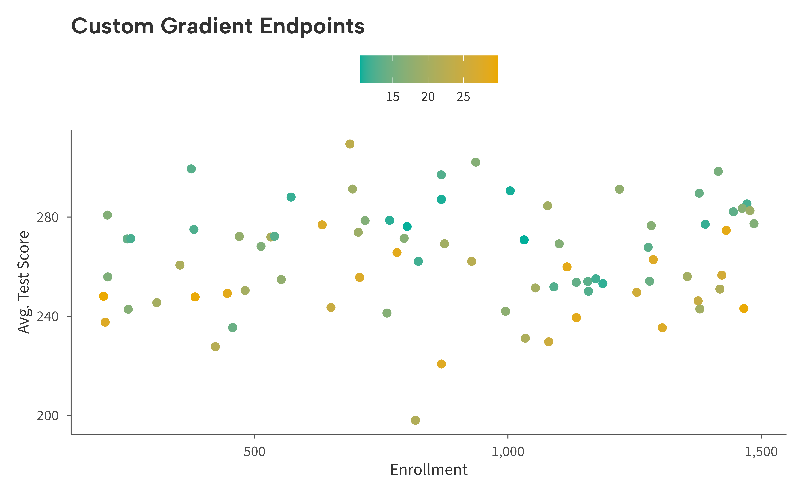

The ggaib package provides color and fill scales in three flavors:
discrete, continuous, and diverging. Each is available for both
color and fill aesthetics. All use colors from
the AIB brand palette.
Discrete
scale_color_aib() and scale_fill_aib() map
categorical variables to the eight-color brand palette. Colors are
ordered for maximum visual contrast.
# Simulate data
set.seed(42)
districts <- data.frame(
spending = c(rnorm(30, 11, 2), rnorm(30, 15, 2.5), rnorm(30, 13, 3)),
avg_score = c(rnorm(30, 250, 15), rnorm(30, 270, 12), rnorm(30, 258, 18)),
urbanicity = rep(c("Urban", "Suburban", "Rural"), each = 30)
)
# Create example figure
ggplot(districts, aes(spending, avg_score, color = urbanicity)) +
geom_point(size = 2) +
scale_color_aib() +
labs(
title = "Discrete Color Scale",
x = "Per-Pupil Spending ($1,000s)",
y = "Average Score"
) +
theme_aib()
# Simulate data
enrollment <- data.frame(
sector = c("Public", "Charter", "Magnet", "Private"),
pct = c(0.798, 0.062, 0.042, 0.098)
)
enrollment$sector <- factor(enrollment$sector, levels = enrollment$sector)
# Create example figure
ggplot(enrollment, aes(sector, pct, fill = sector)) +
geom_col() +
scale_fill_aib() +
scale_y_continuous(
labels = aib_label("percent"),
limits = c(0, 1)
) +
labs(
title = "Discrete Fill Scale",
x = NULL,
y = "Percent"
) +
theme_aib() +
theme(legend.position = "none")
The palette contains eight colors. If your data has more than eight levels a warning is issued.
Continuous
scale_color_aib_c() and scale_fill_aib_c()
create a two-color gradient. The default runs from navy to sky.
# Simulate data
set.seed(42)
schools <- data.frame(
enrollment = runif(80, 200, 1500),
avg_score = rnorm(80, 260, 20),
st_ratio = runif(80, 10, 30)
)
schools$avg_score <- schools$avg_score - (schools$st_ratio - 20) * 1.5
# Make example figure
ggplot(schools, aes(enrollment, avg_score, color = st_ratio)) +
geom_point(size = 2) +
scale_color_aib_b() +
scale_x_continuous(labels = aib_label("comma")) +
labs(
title = "Continuous Color Scale",
x = "Enrollment",
y = "Avg. Test Score",
color = "Student-Teacher\nRatio"
) +
theme_aib()
Override the endpoints with the low and
high arguments:
ggplot(schools, aes(enrollment, avg_score, color = st_ratio)) +
geom_point(size = 2) +
scale_color_aib_c(
low = aib_colors("emerald"),
high = aib_colors("yellow")
) +
scale_x_continuous(labels = aib_label("comma")) +
labs(
title = "Custom Gradient Endpoints",
x = "Enrollment",
y = "Avg. Test Score",
color = "Student-Teacher\nRatio"
) +
theme_aib()
Diverging
scale_color_aib_div() and
scale_fill_aib_div() create a three-color gradient that
highlights deviations from a central value. The default runs from red
through light gray to navy, centered at zero.
set.seed(42)
districts2 <- data.frame(
enrollment = runif(80, 500, 5000),
avg_score = rnorm(80, 255, 20),
spending_change = rnorm(80, 0, 6)
)
ggplot(districts2, aes(enrollment, avg_score, color = spending_change)) +
geom_point(size = 2) +
scale_color_aib_div() +
scale_x_continuous(labels = aib_label("comma")) +
labs(
title = "Diverging Color Scale",
x = "Enrollment",
y = "Avg. Test Score",
color = "Spending\nChange (%)"
) +
theme_aib()
Adjust the midpoint or colors as needed:
ggplot(districts2, aes(enrollment, avg_score, color = spending_change)) +
geom_point(size = 2) +
scale_color_aib_div(midpoint = 2) +
scale_x_continuous(labels = aib_label("comma")) +
labs(
title = "Shifted Midpoint",
x = "Enrollment",
y = "Avg. Test Score",
color = "Spending\nChange (%)"
) +
theme_aib()
Summary
| Function | Aesthetic | Type |
|---|---|---|
scale_color_aib() /
scale_colour_aib()
|
color | Discrete |
scale_fill_aib() |
fill | Discrete |
scale_color_aib_c() /
scale_colour_aib_c()
|
color | Continuous |
scale_fill_aib_c() |
fill | Continuous |
scale_color_aib_div() /
scale_colour_aib_div()
|
color | Diverging |
scale_fill_aib_div() |
fill | Diverging |
All scale functions pass additional arguments (...)
through to the underlying ggplot2 scale, so any parameter supported by
discrete_scale(), scale_color_gradient(), or
scale_color_gradient2() can be used.